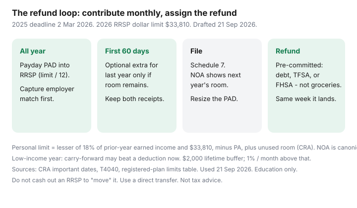

Personal Finance · Canada
RRSP Contribution Timing in Canada: The Refund Loop Without Last-Minute Panic
The late-February RRSP line is a Canadian seasonal sport: unused room, a messy chequing account, and a refund that disappears into March groceries. The first-60-days rule is real. The panic is optional. Build a monthly contribution so March is a filing month, not a fundraising month, then pre-commit the refund to a named job (debt, TFSA, FHSA) before CRA deposits it.
CRA figures used 21 Sep 2026: 2025-tax-year contribution deadline 2 March 2026; 2026 RRSP dollar limit $33,810 (18% of 2025 earned income if lower, minus pension adjustment, plus unused room). 2026-tax-year contributions in the first 60 days of 2027 run through 1 March 2027 on current public explainers — re-check CRA’s important-dates page each January because weekends shift the 60th day.
Disclosure: Brokerage RRSP offers and tax-software offers are offer types. Saving Optimizer may later add partner links. We do not currently claim issuer or software partnerships. This is education, not tax advice. Confirm your deduction limit on your latest Notice of Assessment or in CRA My Account. No debt-relief pitches.
Key takeaways
- Contributions in the first 60 days of a calendar year can be deducted on the prior tax return. Deadline for the 2025 return: 2 March 2026 (CRA T4040 / important dates).
- 2026 dollar limit is $33,810 (CRA registered-plan limits table). Your personal limit is on the NOA — 18% of prior-year earned income, PA subtracted, unused room added. $2,000 lifetime over-contribution buffer still exists; 1% per month tax above that.
- Monthly automation from payday fills the room without a February scramble. Employer group RRSP / matching payroll deductions are a different rail — count them so you do not double-contribute.
- Estimate the refund at your marginal rate and PAD it on arrival to debt or TFSA/FHSA. An uncommitted refund is consumption.
- Carry-forward room is valuable if this year’s income is unusually low. Waiting can be the tax-efficient move.
First 60 days rule: which tax year the contribution applies to
CRA lets you deduct RRSP/PRPP/SPP contributions made in the first 60 days of the year on last year’s return (subject to that year’s deduction limit). Issuer receipts usually split: one for March–December, one for the first 60 days. Keep both for Schedule 7.
Worked calendar:
- A contribution on 15 February 2026 can be deducted on the 2025 return (deadline 2 March 2026 for the 2025 year).
- A contribution on 10 March 2026 is too late for 2025; it sits toward 2026.
- You can choose not to deduct a first-60-days contribution on last year’s return and save it for a higher-income year — unused contributions are not the same as unused room. Track both.
Age 71: last day to contribute to your own RRSP is 31 December of the year you turn 71 (CRA important dates). Spousal RRSP rules still apply; this article does not replace a tax advisor on attribution.
Build a monthly RRSP automation so March is not a scramble
Take deduction limit ÷ 12 (or ÷ 26 for bi-weekly) and PAD the day after payday into RRSP cash or brokerage settlement — same plumbing as pay yourself first. If the limit is $12,000, that is $1,000 a month, not $12,000 on 28 February financed by a line of credit at 8%.
If cash is tight until the refund, you still do not need a last-minute loan. Smaller monthly amounts plus a refund recycle (next section) beat interest on an RRSP-catch-up LOC for most households. The LOC path is how the “refund” is already spent on interest.

Estimate the refund and pre-commit it to debt or TFSA/FHSA
Sketch only — your NOA and a tax program are the real calculator. If you contribute $6,000 and your combined federal-provincial marginal rate is about 30%, the refund order of magnitude is $1,800. On the day you set the RRSP PAD, set a matching rule: “When the CRA deposit hits, $1,800 goes to the unsecured Visa; remainder to TFSA if room.” Put the rule in the same note as your My Account password hint.
Without a pre-commitment, the deposit looks like a bonus. With one, it is the second half of the contribution system. Eligible FHSA savers can point the refund at unused FHSA room (separate $8,000/year mechanics). High-interest consumer debt usually outranks a TFSA top-up — that is cashflow, not a slogan.
Carry-forward room: when waiting for a higher-income year saves more tax
Unused RRSP deduction room carries forward. A parental leave, a sabbatical, or a year of lower self-employment income can make this year’s deduction worth less than next year’s. Monthly automation can still contribute (if you want the compounding inside the RRSP) while you delay the deduction — or you can pause contributions and fill TFSA/FHSA instead. The mistake is dumping a large contribution into a low-income year because Twitter said “always max the RRSP.” Read the NOA. If you are in a low bracket now and expect a much higher one later, waiting can be rational. If you are in a high bracket now, waiting is usually leaving a tax save on the table.
Employer group RRSP payroll deductions vs personal contributions
Payroll deductions to a group RRSP (and DPSP/matching) reduce cash and often show up via pension adjustment, which lowers next year’s RRSP room. Count the match first — it is a 50–100% instant return on the contributed slice, which no HISA rate matches. Then size the personal PAD so group + personal cannot exceed this year’s deduction limit. Ask HR whether the group plan is a true RRSP, a DPSP, or a pension; the acronym on the booklet is not trivia.
Personal brokerage RRSPs are useful when the group plan’s fees are high and the match is already captured. Transfer rules and fees are a separate FCAC/CBA timeline (7–12 business days). Do not cash out and recontribute; that is a withdrawal, not a transfer.
Checklist: contribution receipt, My Account room, and Notice of Assessment
- January: download last year’s NOA / T1028-style RRSP limit. Note the 2026 dollar cap $33,810 as a ceiling, not your number.
- Each contribution: confirm it is coded RRSP, not a non-registered HISA with a similar nickname.
- After the first 60 days: collect both receipts. File Schedule 7. Software is an offer type; an accountant is a cost decision — pick one, do not skip the schedule.
- When the NOA arrives: confirm unused room for next year. Resize the monthly PAD. If you over-contributed beyond the $2,000 buffer, CRA’s 1% monthly tax applies until you fix it — this is not a “wait for a letter” situation.
- Refund date: execute the pre-commitment the same week. If CRA is slow, do not spend the estimated refund on a credit card float.
Sources & date stamps
- CRA important dates for RRSPs — 2 March 2026 deadline for the 2025 tax year (used 21 Sep 2026).
- CRA MP/RRSP/TFSA limits table — 2026 RRSP dollar limit $33,810; 2027 $35,390.
- CRA T4040 / contributing pages — deduction limit formula (18% / dollar limit / PA); $2,000 buffer mentioned on contribution-limit explainers.
- CRA contribution-year (issuer) table — 2025 second period 1 Jan–2 Mar 2026.
- FCAC registered-plan transfer timelines for CBA-member banks.
Frequently asked questions
What is the RRSP deadline for the 2025 tax year?
CRA: 2 March 2026. Contributions from the start of the 2025 contribution year through that date can be deducted on the 2025 return, subject to your deduction limit. The 2026 tax year’s first-60-days window is expected to end 1 March 2027 on current public explainers — confirm on CRA’s important-dates page each January.
Is $33,810 how much I can put in for 2026?
It is the official dollar ceiling for new room, not your personal limit. CRA calculates the lesser of 18% of prior-year earned income and $33,810, then adjusts for pension adjustment and unused room. Your NOA / My Account is canonical.
Should I borrow to contribute in February?
Usually no if the loan interest exceeds the tax save, or if you would not repay it from the refund. Monthly automation plus a refund recycle avoids the scramble. A short loan can still make sense at a high marginal rate with a written payoff from the refund — run the numbers; do not treat it as default advice.
Does an employer RRSP match use my room?
Employer contributions and pension adjustments affect room. Your personal contributions plus what the plan reports must fit the deduction limit. Capture the match first, then size the personal PAD so you do not over-contribute.
Can I skip this year if income is low?
Unused room carries forward. You can pause personal contributions, or contribute now and delay the deduction. A low-income year is often a TFSA/FHSA year instead. That is a tax-planning choice — confirm with a licensed advisor if the numbers are large.